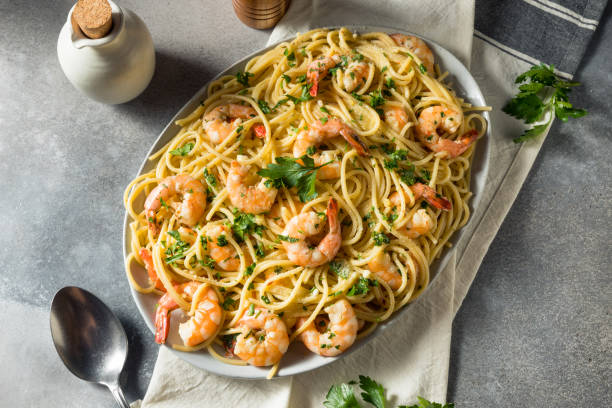

Shrimp Scampi With Pasta

Description
Ready in as little as 40 minutes, this seafood dish is quite easy to make.
It contains garlic, butter, and white wine sauce fuzed together for it's trademark flavor.
Ingredients
- Shrimp
- Pasta
- Butter
- Extra-virgin olive oil
- Shallots and garlic
- White wine
- Lemon juice
- Seasonings
- Parsley
Steps
- Gather the ingredients.
- Bring large pot of salted water to boil, cook linguine in pot for 6 to 8 minutes. Drain.
- Melt 2 tablespoons of butter with 2 tablespoons of olive oil in a large skillet over medium heat.
- Add shallots and garlic; cook and stir until shallots are translucent, 3 to minutes.
- Season shrimp with kosher salt and black pepper. Add to skillet; cook until pink, stirring
occasionally, 2 to 3 minutes. After, transfer shrimp to plate and keep warm.
- Add white wine and lemon juice to skillet; bring to a boil, scraping browned bits of food off
the bottom of skillet with wooden spoon.
- Melt remaining 2 tablespoons butter in skillet; stir in 2 tablespoons olive oil; bring to simmer.
- Toss linguine, shrimp, and parsley in butter mixture until coated; season with salt and black
pepper. Drizzle 1 tablespoon olive oil to serve.
- Serve hot and enjoy!